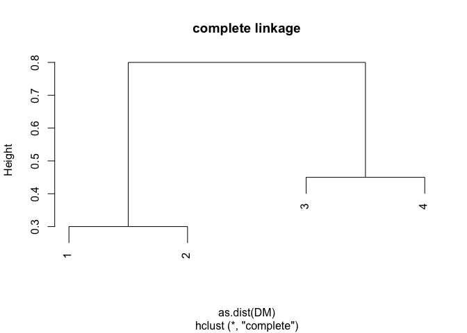
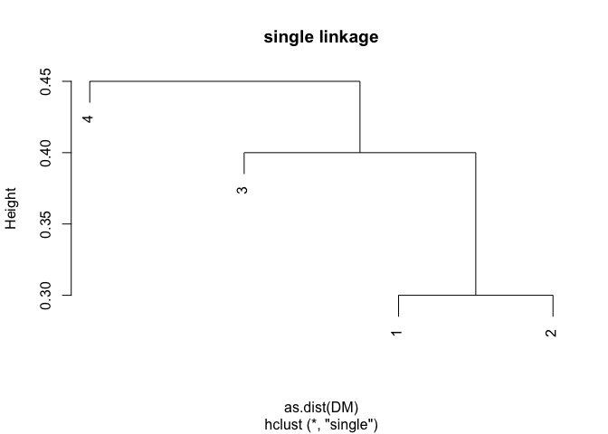
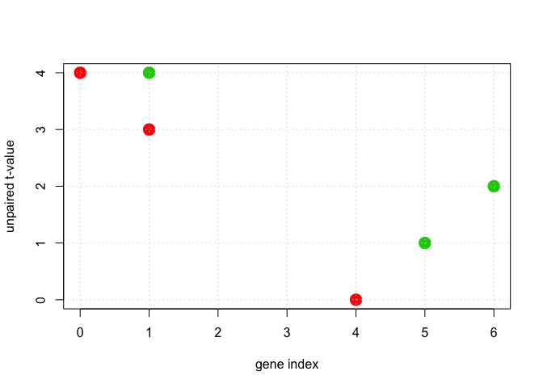
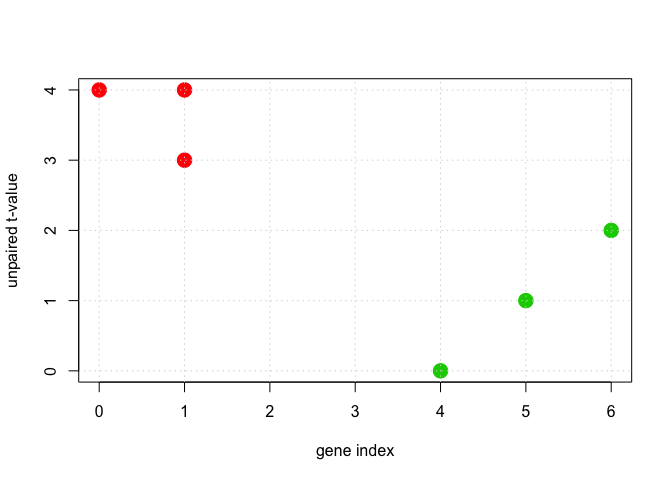
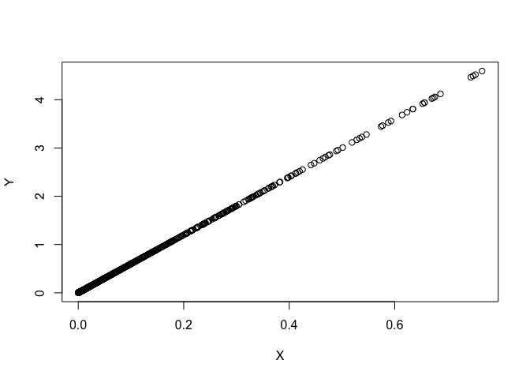
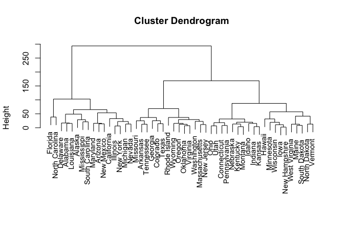
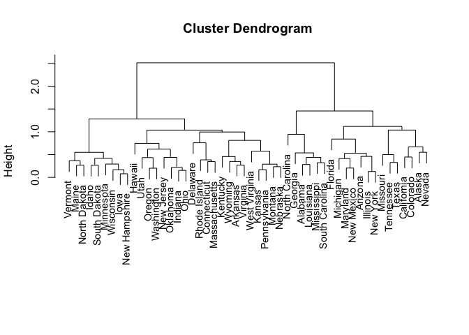

set.seed(0)
DM <- matrix(data = c(0, 0.3, 0.4, 0.7, 0.3, 0, 0.5, 0.8, 0.4, 0.5, 0, 0.45, 0.7, 0.8, 0.45, 0), nrow = 4, ncol = 4, byrow = TRUE)
plot(hclust(as.dist(DM), method = "complete"), main = "complete linkage")

plot(hclust(as.dist(DM), method = "single"), main = "single linkage")

set.seed(0)
# Part (a):
DF <- data.frame(x1 = c(1, 1, 0, 5, 6, 4), x2 = c(4, 3, 4, 1, 2, 0))
n <- dim(DF)[1]
K <- 2
# Part (b): Assign each point to a cluster
labels <- sample(1:K, n, replace = TRUE)
plot(DF$x1, DF$x2, cex = 2, pch = 19, col = (labels + 1), xlab = "gene index", ylab = "unpaired t-value")
grid()

while (TRUE) {
# Part (c): Compute the centroids of each cluster
cents <- matrix(nrow = K, ncol = 2)
for (l in 1:K) {
samps <- labels == l
cents[l, ] <- apply(DF[samps, ], 2, mean)
}
# Part (d): Assign each sample to the centroid it is closest too:
new_labels <- rep(NA, n)
for (si in 1:n) {
smallest_norm <- +Inf
for (l in 1:K) {
nm <- norm(as.matrix(DF[si, ] - cents[l, ]), type = "2")
if (nm < smallest_norm) {
smallest_norm <- nm
new_labels[si] <- l
}
}
}
# Part (e): Repeat until labels stop changing:
if (sum(new_labels == labels) == n) {
break
} else {
labels <- new_labels
}
}
# Part (f): Plot the updated cluster labels
plot(DF$x1, DF$x2, cex = 2, pch = 19, col = (labels + 1), xlab = "gene index", ylab = "unpaired t-value")
grid()

set.seed(0)
# Scale each observation (not the features):
USA_scaled <- t(scale(t(USArrests)))
# The correlation of each sample with the other samples:
Rij <- cor(t(USA_scaled)) # -1 <= Rij <= +1
OneMinusRij <- 1 - Rij # 0 <= 1-Rij <= +2
X <- OneMinusRij[lower.tri(OneMinusRij)]
D <- as.matrix(dist(USA_scaled)^2)
Y <- D[lower.tri(D)]
plot(X, Y)

summary(X/Y)
## Min. 1st Qu. Median Mean 3rd Qu. Max.
## 0.1667 0.1667 0.1667 0.1667 0.1667 0.1667
set.seed(0)
pr.out <- prcomp(USArrests, scale = TRUE)
# Using the output from prcomp:
pr.var <- pr.out$sdev^2
pve_1 <- pr.var/sum(pr.var)
# Apply Equation 10.8 directly:
USArrests_scaled <- scale(USArrests)
denom <- sum(apply(USArrests_scaled^2, 2, sum))
Phi <- pr.out$rotation
USArrests_projected <- USArrests_scaled %*% Phi # this is the same as pr.out$x
numer <- apply(pr.out$x^2, 2, sum)
pve_2 <- numer/denom
print(pve_1)
## [1] 0.62006039 0.24744129 0.08914080 0.04335752
print(pve_2)
## PC1 PC2 PC3 PC4
## 0.62006039 0.24744129 0.08914080 0.04335752
print(pve_1 - pve_2)
## PC1 PC2 PC3 PC4
## -1.110223e-16 -2.498002e-16 -4.163336e-17 0.000000e+00
set.seed(0)
# Part (a-b):
hclust.complete <- hclust(dist(USArrests), method = "complete")
plot(hclust.complete, xlab = "", sub = "", cex = 0.9)

# cutree( hclust.complete, h=150 ) # height we cut at
ct <- cutree(hclust.complete, k = 3) # number of clusters to cut into
# Print which states go into each cluster:
for (k in 1:3) {
print(k)
print(rownames(USArrests)[ct == k])
}
## [1] 1
## [1] "Alabama" "Alaska" "Arizona" "California"
## [5] "Delaware" "Florida" "Illinois" "Louisiana"
## [9] "Maryland" "Michigan" "Mississippi" "Nevada"
## [13] "New Mexico" "New York" "North Carolina" "South Carolina"
## [1] 2
## [1] "Arkansas" "Colorado" "Georgia" "Massachusetts"
## [5] "Missouri" "New Jersey" "Oklahoma" "Oregon"
## [9] "Rhode Island" "Tennessee" "Texas" "Virginia"
## [13] "Washington" "Wyoming"
## [1] 3
## [1] "Connecticut" "Hawaii" "Idaho" "Indiana"
## [5] "Iowa" "Kansas" "Kentucky" "Maine"
## [9] "Minnesota" "Montana" "Nebraska" "New Hampshire"
## [13] "North Dakota" "Ohio" "Pennsylvania" "South Dakota"
## [17] "Utah" "Vermont" "West Virginia" "Wisconsin"
# Part (c-d):
hclust.complete.scale <- hclust(dist(scale(USArrests, center = FALSE)), method = "complete")
plot(hclust.complete.scale, xlab = "", sub = "", cex = 0.9)

ct <- cutree(hclust.complete.scale, k = 3) # number of clusters to cut into
# Print which states go into each cluster in this case:
for (k in 1:3) {
print(k)
print(rownames(USArrests)[ct == k])
}
## [1] 1
## [1] "Alabama" "Georgia" "Louisiana" "Mississippi"
## [5] "North Carolina" "South Carolina"
## [1] 2
## [1] "Alaska" "Arizona" "California" "Colorado" "Florida"
## [6] "Illinois" "Maryland" "Michigan" "Missouri" "Nevada"
## [11] "New Mexico" "New York" "Tennessee" "Texas"
## [1] 3
## [1] "Arkansas" "Connecticut" "Delaware" "Hawaii"
## [5] "Idaho" "Indiana" "Iowa" "Kansas"
## [9] "Kentucky" "Maine" "Massachusetts" "Minnesota"
## [13] "Montana" "Nebraska" "New Hampshire" "New Jersey"
## [17] "North Dakota" "Ohio" "Oklahoma" "Oregon"
## [21] "Pennsylvania" "Rhode Island" "South Dakota" "Utah"
## [25] "Vermont" "Virginia" "Washington" "West Virginia"
## [29] "Wisconsin" "Wyoming"